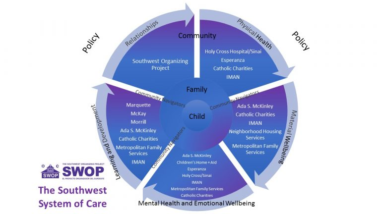
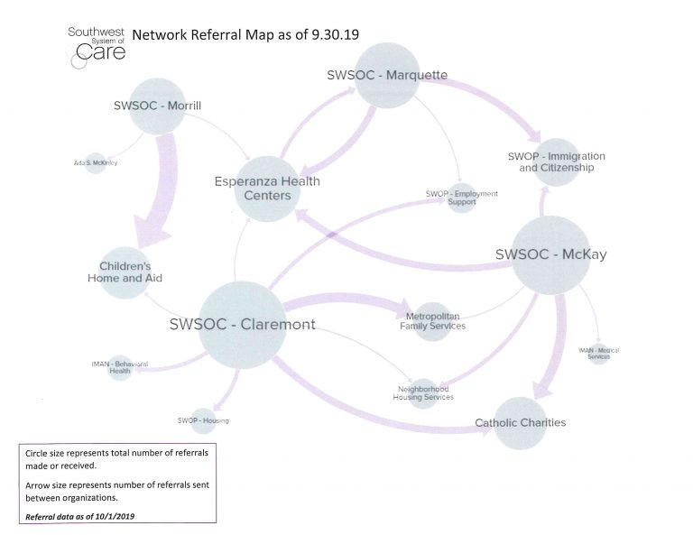
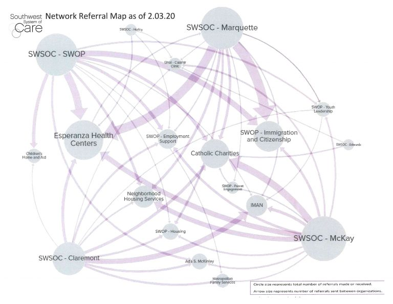

Health - SWSOC
Health
SWOP partners with Holy Cross Hospital and Esperanza Health Center to ensure community access to high-quality health care. In addition, SWOP recently completed a community-wide health plan detailing work to be done to improve the health outcomes of neighborhood residents. Activities include working to improve access and affordability of healthcare for the undocumented; working to increase and educate residents on how to navigate the health system so they can make the best choices for their families; working to promote the long-term viability of health institutions in the community; and working to promote access to health insurance. In the past, SWOP has assisted families in signing up for ACA and AllKids insurance.
Southwest Systems of Care
The Southwest Organizing Project (SWOP) organized a Southwest System of Care Network (SWSOC). SWOP used a community organizing model of relationship building to bring together mental health, healthcare, and social service providers with schools, after-school providers, youth leadership development programs, and others to meet the holistic needs and build on the assets of the communities’ young people and their families.
SWOP believes that by bringing these partners together to coordinate and collaborate on care, young people will receive better services, more aligned to their needs and desires while also having the important impacts of improving schools and institutions, improving relationships, and improving overall community well-being. SWOP aims to use learning from SWSOC implementation to drive policy change that will improve service delivery.
Currently, SWSOC Navigators are building relationships and supporting families in the Claremont, Edwards, Hurley, Marquette and McKay Elementary School communities. Since the launch of the pilot in March of 2019, the SWSOC has shepherded connections between over 350 families and supports and services offered by partner institutions. 
The development of these connections can be seen in the growth of the below network referral maps which show the ways in which relationships have evolved throughout the full implementation phase of the SWSOC from September of 2019 through January of 2020 .
To learn more, contact Jessica Biggs at jbiggs@swopchicago.org.